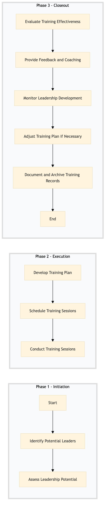

| Role | Steps |
|---|---|
| HR Manager | 1.1 1.2 3.1 3.2 3.4 |
| Learning & Development Manager | 2.1 2.2 3.5 |
| Trainer, Mentor | 2.3 |
| Talent Acquisition Specialist | 1.2 3.3 |
| Step | Name | Role | System | Input | Output | KPI | Dec? | Exc? | Pain Point / Risk |
|---|---|---|---|---|---|---|---|---|---|
| 1.1 | Identify Potential Leaders | HR Manager | Oracle OPERA Cloud, Workday HCM | Employee performance data, job descriptions | List of potential leaders | Time to identify < 2 weeks | N | Y | Accurate identification of high-potential employees |
| 1.2 | Assess Leadership Potential | HR Manager, Talent Acquisition Specialist | Oracle OPERA Cloud, Workday HCM | List of potential leaders | Leadership assessment report | Time to complete assessment < 1 month | Y | N | Standardizing the leadership assessment criteria |
| 2.1 | Develop Training Plan | Learning & Development Manager | Oracle OPERA Cloud, Book4Time | Leadership assessment report | Training plan with objectives and activities | Plan development time < 1 week | N | Y | Aligning training content with Marriott standards |
| 2.2 | Schedule Training Sessions | Learning & Development Manager, Scheduler | Book4Time, Oracle OPERA Cloud | Training plan | Scheduled training sessions | Scheduling time < 2 days | N | Y | Managing conflicting schedules |
| 2.3 | Conduct Training Sessions | Trainer, Mentor | Oracle OPERA Cloud, Microsoft Power BI | Scheduled training sessions | Training session records | Session completion rate > 90% | Y | N | Engaging participants in interactive training |
| 3.1 | Evaluate Training Effectiveness | Learning & Development Manager, HR Manager | Oracle OPERA Cloud, Microsoft Power BI | Training session records | Effectiveness evaluation report | Evaluation time < 1 week | Y | N | Measuring the impact of training on leadership skills |
| 3.2 | Provide Feedback and Coaching | HR Manager, Mentor | Oracle OPERA Cloud, Workday HCM | Effectiveness evaluation report | Feedback and coaching plan | Feedback time < 2 weeks | N | Y | Personalizing feedback for each leader |
| 3.3 | Monitor Leadership Development | HR Manager, Talent Acquisition Specialist | Oracle OPERA Cloud, Workday HCM | Feedback and coaching plan | Leadership development progress report | Monitoring frequency > 1 month | Y | N | Consistent monitoring of leadership growth |
| 3.4 | Adjust Training Plan if Necessary | Learning & Development Manager, HR Manager | Oracle OPERA Cloud, Book4Time | Leadership development progress report | Adjusted training plan | Adjustment time < 1 week | Y | N | Flexibility in adjusting the training program |
| 3.5 | Document and Archive Training Records | Learning & Development Manager, HR Manager | Oracle OPERA Cloud, Workday HCM | All training-related documents | Archived training records | Archiving time < 1 day | N | Y | Ensuring compliance with data retention policies |
A structured process document for the Leadership Development Programme at a Marriott full-service hotel, focusing on human resources and training.